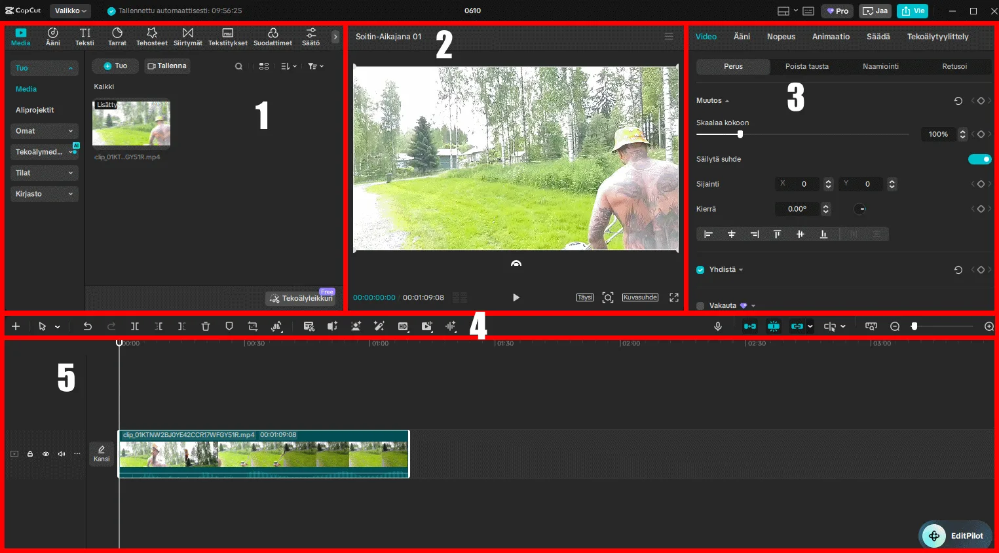
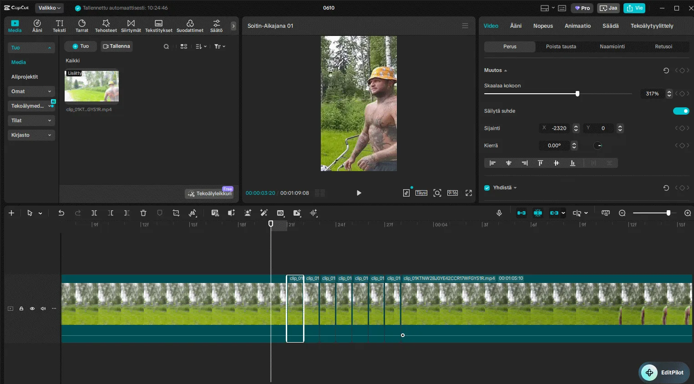

CapCut on yksi helpoimmista työkaluista joilla kuka tahansa voi editoida videoita kuten ammattilainen, et tarvitse PRO-versiota eikä sinun tarvitse kirjautua sisään, riittää että sinulla on tietokone jossa editoida. Käyn tässä oppaassa läpi miten voit editoida KICK-suoratoistopalvelusta leikkeen TikTok-formaattiin.
Otin esimerkkiini OGUMTV:n leikkeen jossa hän leikkaa nurmikkoa koska se on hieman haastavampi muuttaa 16:9-resoluutiosta 9:16-resoluutioon joka on siis TikTok, IG Reels tai YT Shorts -formaatti. Tämän oppaan tarkoituksena on näyttää sinulle miten voit editoida videoita kuten ammattilainen, ja oppaan lopussa kerron miten tästä taidosta tehdään oikea tulonlähde.
HUOMIO: Videoiden lataaminen KICK-sovelluksesta vaatii aina luvan mikäli aiot julkaista kyseisen videon, tätä esimerkkivideota ei julkaista eikä viimeistellä vaan sitä käytetään vain opetustarkoitukseen.
Luo projekti ja aloita editointi
CapCut-sovelluksessa voit aloittaa uuden projektin, lataa tähän videosi jota haluat editoida. Tässä kohtaa kannattaa tutustua rauhassa ja ajan kanssa mitä kaikkia ominaisuuksia sinulla on tässä näkymässä koska sinun tulee ymmärtää miten editointi tapahtuu. Tässä kuvassa esitän numeroiden avulla 1) Projektisi tiedostot, 2) Esikatselu videolle, 3) Videon säädöt, 4) Editointityökalut, 5) Editointialue – muista nämä jatkossa koska käytän alueen nimeä kun kirjoitan mitä siellä tehdään.

Ennen kuin aloitat editoinnin on hyvä katsoa lähdevideo kertaalleen läpi kokonaan, tämä antaa sinulle käsityksen siitä mitä materiaalia sinulla on, mitkä hetket ovat kiinnostavimpia katsojalle ja missä kohti leikkeet kannattaa tehdä. Hyvä editoija suunnittelee ennen kuin leikkaa, huono editoija leikkaa ensin ja miettii sitten, tee se oikein jo alusta.
Ääniraita kuntoon
Editointialueessa eli aikajanassa me voidaan suurentaa tuota leikettä, koska me halutaan nähdä ääniraita joka on leikkeen alapuolella olevina palkkeina. Tämä onnistuu tuosta vasemmasta laidasta missä on numero, siitä voimme laajentaa tätä osiota jotta näemme ääniraidan kunnolla. Me halutaan laskea ääniraitaa siten ettei yhtään punaisia alueita näy, punainen tarkoittaa liian kovaa ääntä ja se kuulostaa pahalta lopullisessa videossa.
Kun olet katsonut ääniraidan kuntoon klikkaa CTRL ja samaan aikaan hiiren rullalla pyörität ulospäin jotta aikajana menee tarkemmaksi. Koska tässä videossa OGUM liikkuu meillä on hieman haastavampi tehdä tämä editointi kun joudumme melkein jokaista videokehystä eli framea muokkaamaan, mutta koska tämä on haastavampi videoeditointi niin sinä opit paremmin.
Äänen suhteen yksi yleinen virhe on se että aloittelija jättää äänen liian kovalle tai liian hiljaiselle ja katsojan kokemus kärsii tästä enemmän kuin mistään visuaalisesta asiasta, ihminen sietää huonompaa kuvaa paljon helpommin kuin huonoa ääntä joten ääniraita on aina ensimmäinen asia johon kiinnität huomiota.
Vaihdetaan kuvasuhde
Seuraavaksi me mennään tuohon esikatseluvideo-osioon, huomaatko kun siellä lukee "kuvasuhde", klikkaa tästä ja valitse 9:16. Nyt tämä 16:9-video näyttää hölmöltä, älä hätäile, meidän pitää suurentaa tämä video sopimaan tähän ruutuun sekä liikuttaa sitä niin että henkilö tulee esiin, mutta tätä me käydään tarkemmin läpi kun alamme editoimaan tätä videota. Nyt vasta tehdään pohja kuntoon jotta saamme edes aloitettua editoinnin.
Tässä on hyvä tietää miksi 9:16 on tärkeä, TikTok, Instagram Reels ja YouTube Shorts ovat kaikki pystyformaattia koska ihmiset pitävät puhelinta pystyasennossa, jos julkaiset vaakavideon näissä palveluissa video ei täytä ruutua ja katsoja selaa ohi välittömästi. Formaatti vaikuttaa suoraan siihen kuinka moni katsoo videon loppuun.
Aloitetaan itse videoeditointi pilkkomalla leikettä
Olemme nyt zoomanneet videon niin että pystymme katsomaan sitä jokainen frame kerrallaan. Hyvässä editoinnissa ei näy mitään nykimisiä kun henkilö esimerkiksi liikkuu, tämä tarkoittaa sitä että pääleike on liikutettava frame by frame -menetelmällä pienin askelin jotta video ei nyi lainkaan. Tätä varten CapCut-editorissa löytyy ominaisuus "pilko" editointityökalujen palkista, tämän avulla me voidaan katsoa liikuttamalla tuota vaaleaa palkkia joka on editointialueessa henkilön liikettä ja katsoa missä kohtaa meidän pitää pilkkoa leike osiin jotta voimme alkaa seuraamaan henkilöä. Koska video muutetaan 16:9-formaatista vaakakuvasta 9:16-formaattiin pystykuvaan on meillä paljon tilaa liikkua.

Tässä aloitin jo hieman tätä leikkaamista, sinun ei välttämättä tarvitse lähteä ihan täysin samalla tavalla frame by frame leikkaamaan, otin tähän nyt esimerkin miten itse teen mutta jotkut tekevät tämän saman leikkaamalla suurempia osia. Meillä on tuossa tuo osio videon säädöt jossa voimme säätää videon sijaintia X-akselilla eli vaaka sekä Y-akselilla eli pysty, huomaatko että aikaisemmin videon sijainti X-akselilla oli -2346 kun nyt tässä valitussa leikkeessä jonka pilkoin onkin sijainti -2320, tämä on se missä me liikutetaan videota vaakatasossa joko vasemmalle tai oikealle.

Tässä yläpuolella on gif jossa menin frame by frame ja siirsin videota ilman nykimistä vasemmalle, katso tuota takana olevaa koivua niin huomaat kuinka sujuvasti tämä video liikkuu. Hyvänä nyrkkisääntönä voidaan pitää että pienet 20–50 pikselin liikkeet ovat sulavia jos ne tehdään frame by frame, jos taas otat yhden sekunnin pituisen pätkän jonka liikutat aina vasemmalle alkaa video nykimään ja se näyttää amatöörityöltä.
Videon vienti eli renderöinti
Nyt kun ollaan saatu tämä video editoitua tulee se kohta jossa video pitäisi luoda. Sinä et tarvitse PRO-versiota CapCut-sovelluksesta eikä sinun kannata lisätä ääniraitaa suoraan CapCutin puolella, vaan sinun tulisi editoida tämä video sovelluksessa jonka jälkeen lataat sen haluamallesi some-alustalle puhelimesi kautta. Tässä vaiheessa voit lisätä ääniraidan sekä tekstit ja muut tiedot, muista että lisäät videoon kaiken tekstin, kuvat yms CapCut-puolella ja ääni, videon otsikko sekä hashtagit tehdään puhelimella. Näin saat toivottavasti videosi trendaamaan.
Renderöinnissä kannattaa valita korkein mahdollinen laatu jota CapCut tarjoaa ilmaisella versiolla, älä tyydy alempaan resoluutioon koska alustat kuten TikTok pakkaavat videon uudelleen ja jo valmiiksi huonolaatuinen video näyttää julkaisun jälkeen todella heikolta.
Miten kehittyä editoijana?

Tämä oli lyhyt sekä nopea opas siihen miten editoidaan videoita. Tietyt asiat vaikuttavat siihen miten katsoja saadaan katsomaan video loppuun, näissä vaikuttaa kultainen suhde eli ihmisen kasvot tulisi olla mahdollisimman keskellä ja mikäli aiot käyttää tekstitystä laita ne mahdollisimman lähelle suuta eli tuohon leuan alapuolelle. TikTok-videossa sinulla on vain 3 sekuntia aikaa saada katsoja kiintymään klippiisi, eli ensimmäinen kuva ja ensimmäinen ääni ratkaisee täysin säätääkö katsoja ohi vai jääkö hän katsomaan.
Kuten olen täällä monesti jo sanonut niin toistan itseäni että videoeditoinnissa ratkaisee se kuinka monta kertaa teet editointia, kukaan ei synny maailman parhaimpana editoijana vaan sinun pitää ensin epäonnistua useamman kerran jotta voit onnistua. Sinusta tulee hyvä kun olet editoinut ensimmäiset 100 videota, sinusta tulee parempi kuin muista kun olet editoinut yli 2000 videota, eli vain ja ainoastaan tekemällä sinä opit ja taitosi kehittyy. Voit harjoitella näillä KICK-leikkeillä aluksi mutta muista kysyä lupa leikkeen julkaisuun.
Miten muuttaa videoeditointi taito rahaksi
Tässä se kohta johon moni haluaa päästä mutta harvoin kukaan kertoo konkreettisesti miten se oikeasti tapahtuu. Videoeditointi on taito jolla on oikeaa kysyntää markkinoilla ja se kysyntä kasvaa jatkuvasti koska sisällöntuottajia on enemmän kuin koskaan mutta heistä harva osaa tai haluaa editoida itse.
Ensimmäinen ja nopein tapa tehdä rahaa on tarjota editointipalvelua suoraan sisällöntuottajille, mene TikTokiin tai Instagramiin ja etsi pieniä tai keskisuuria tilejä joilla on hyvää sisältöä mutta huonoa editointia, ota yhteyttä suoraan ja tarjoa editointiasi. Aloita pienellä hinnalla jotta saat ensimmäiset referenssit, yksikin tyytyväinen asiakas joka suosittelee sinua eteenpäin voi avata oven useampaan asiakkuuteen.
Toinen tapa on erikoistua johonkin tiettyyn niche-alueeseen, jos editoit esimerkiksi pelivideoita, urheilusisältöä tai yrittäjäsisältöä sinusta tulee se henkilö jolle kyseisen alan tekijät tulevat kun he tarvitsevat editoijaa. Erikoistuminen tarkoittaa kilpailua pienemmällä areenalla ja siellä on helpompi erottua kuin yleisellä editorin markkinalla.
Kolmas tapa on myydä editoituja leikkeitä tai template-paketteja, eli editoit valmiita pohjia joita muut voivat ostaa ja käyttää omissa videoissaan. Tämä on se tapa joka voi skaalautua koska teet työn kerran ja myyt sen usealle.
Se yhteinen nimittäjä näissä kaikissa on se sama 2000 videon harjoittelu, kun olet editoinut tarpeeksi sinulla on näyttösalkku jolla voit osoittaa taitosi ja hinnoitella itsesi sen mukaan. Editoija jolla on näyttösalkku pyytää huomattavasti parempaa hintaa kuin editoija jolla ei ole, ja hyvä näyttösalkku myy paremmin kuin mikään mainos jonka voisit tehdä itsestäsi.